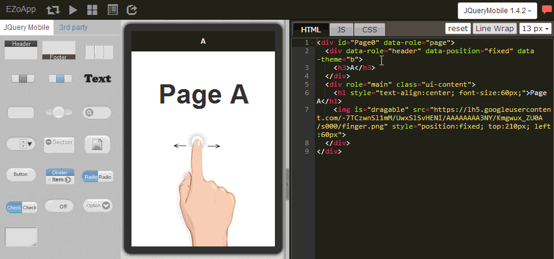

對於開發一個 app 而言，最重要的當然就是手指的觸控了！但對於熟悉 HTML 與 CSS 等網頁工具的開發者來書，手指與滑鼠的操作行為是截然不同的，如何能夠針對手持式裝置平台來設計手勢，便成為了開發者的一個重要課題。
今天大家有福了！因為 EZoApp 也有提供了利用手勢滑動來轉換頁面的機制，使用者只要撰寫部分的 JavaScript ，就能夠利用手勢在不同頁面之間切換，完全設計出 app 的操作行為，而因為使用網頁的語法，在各種手持裝置平台都能夠順利運作，真是設計者與開發者的一大福音！
對於 JavaScript 不熟悉的朋友也不用擔心，以下會提供相關的程式碼給大家參考，照著範例進行，就算不熟悉也可以做出相當有水準的產品喔！
範例連結：
結合 JavaScript 應用 - 滑動頁面實作

滑動頁面顧名思義，就是用手指來左滑又滑頁面，因此我們必須要新增頁面來進行滑動的行為，這裡我們使用 EZoApp 所提供的頁面新增功能，只要點選下方 page 的黑色區域，就會打開頁面的版塊，再次點選就會收合起來。

打開 Page 版塊之後，可以看到上方有五個選項小圖示，分別是新增頁面，重新命名頁面、複製頁面、刪除頁面與重新刷新版面，我們只要點選新增頁面的圖示，就可以新增頁面了。

點選新增頁面圖示後，就會彈出視窗要我們命名新的頁面，這個名稱不能重複，因為頁面名稱在 HTML 當中是 id 的值，所以是不能重複的。

就這樣新增三個頁面，分別給予名稱，以及塞入一些內容做為頁面的辨識。( 這樣滑到哪一頁才清楚 )

只有新增頁面是不能夠進行滑動的，接著我們就要來撰寫一些 JavaScript 來讓頁面滑動，這裡提供給大家基本的頁面滑動寫法，只要複製在程式碼編輯區的 js 頁籤內貼上，按下 preview 的按鈕就可以左滑右滑囉！( 記得 id 的名稱要寫對，不然就無法順利進行 )
var pages = ['Page0', 'Page1', 'Page2']; //頁面的名稱(id)
$(document).on('pageinit', '#Page0', function () {
$(document).on("swiperight", function () { //往右滑的動作
var pageId = $.mobile.activePage.attr('id');
var idx = pages.indexOf(pageId); //頁面數量
idx = idx - 1 < 0 ? pages.length - 1 : idx - 1; //讓頁面滑到底的時候會循環
$.mobile.changePage('#' + pages[idx], { //jQuery Mobile 的手勢動作
'transition': 'slide',
'reverse': true
});
});
$(document).on("swipeleft", function () { //往左滑的動作
var pageId = $.mobile.activePage.attr('id');
var idx = pages.indexOf(pageId); //頁面數量
idx = ++idx % pages.length; //讓頁面滑到底的時候會循環
$.mobile.changePage('#' + pages[idx], { //jQuery Mobile 的手勢動作
'transition': 'slide'
});
});
});
就這樣我們可以輕鬆製作出一個簡易的滑動效果囉！
範例連結：
結合 JavaScript 應用 - 滑動頁面實作